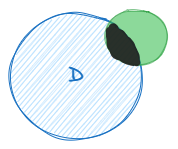
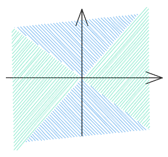

今天来探讨多元函数微分的一些问题。从一维推广到多维，函数的各种性质发生了很大变化，需要对原有的研究方法进行扩展。
这次没有以Q&A的方式继续，单纯就几个容易想不清楚的概念进行探究。
多元函数的极限
这里仅给出一般的二元函数，拓展到更多维数或甚至是向量值函数也都很容易，就暂时不写了。
设二元函数 P0(x0,y0) 是D的聚点。如果存在常数A，对于任意给定的正数 ϵ ，总存在正数 δ ，使得当点 P(x,y)∈D∩U˚(P0,δ) 时，都有 ∣f(x,y)−A∣<ϵ ，则称常数A为函数 f(x,y) 当 (x,y)→(x0,y0) 时的极限。
注意这样几点：
-
为什么不再采用 P0∈D ，而是使用聚点的概念？简单来说，因为我们需要保证它附近总有定义。如果这甚至是个孤立点，是没有办法进行极限的计算的。
-
当点 P(x,y)∈D∩U˚(P0,δ) 时：点 M0 的 δ 去心邻域记作 U˚(P0,δ) 。它的定义为 U˚(P0,δ)={M∣0<ρ(M0,M)<δ,M on the plane} 。（M在平面上，我也不知道应不应该这么写的）

所以 (x,y)→(x0,y0) 的过程如何限定呢？没有限定这条路径怎么走。
我们容易产生一种错觉，好像一维的时候我们就有某种路径的限定，其实是不存在的，只有一个个越套越小的圈；只要在这个收紧的圈里，zig-zag左右横跳也没关系。
二维的情况也是如此，我们只是选取一个又一个更小的**（离散的！）**邻域，选取其中的点，至于这中间的点如何移动，我们不关心也关心不了。正如区间套定理。
或许应当摒弃“（连续）趋向”的数学直觉；从来没有这么定义过（这么多年都是这个定义，不要睁着眼睛乱说）。
全微分和偏导数
在一维的情况下，可微意味着可以采用一阶线性估计。在多元的情况下这一点是一致的，请看：
设n元函数 u=f(x)在点x0=(x10,x20,...,xn0) 的某邻域上有定义，如果有一个关于 Δx=(Δx1,Δx2,...,Δxn) 的线性函数k，使得 f(x0+Δx)−f(x0)=k(Δx)+o(∥Δx∥) ，则称函数f在 x0 点可微，并称 k(Δx)为f在点 x0 的全微分，记作 du 。
可微意味着一阶线性估计，故为不同维度上的“以直代曲”。在一维的情况下，可微函数可以被直线局部拟合；在二维的情况下，可微函数可以被平面局部拟合。
可微⟹连续
可微可以推出连续。
设n元函数u=f(x) 在点x0可微，则f在点x0连续。
证明：
∃(a1,a2,...,an)∈Rn，使得Δu=f(x0+Δx)−f(x0)=a⋅Δx+o(∥Δx∥)
故∥Δx∥→0时，Δu→0，即f在点x0连续。
（∥Δx∥→0 时，Δu→0：对Δu 使用夹逼法吧！）
偏导数连续⟹可微
导数的定义在多元函数中变成一个很让人头疼的事情，因为我们没办法把向量放到商的位置。怎么办呢？采用各个方向的偏导数所拼凑起来的向量也就是梯度，作为对该点趋向性的表示。
可微也可以推出各个方向的偏导存在：因为向各个轴的线性估计都已给出。各个轴向之间是正交的，是线性无关的，所以求偏导的时候会直接消除其它变量的影响。这里暂且不写了。
但反过来，各个方向的偏导存在并不能推出可微。在某点处诸偏导数的存在性甚至不能保证函数在该点的连续性。如果要举例，考虑一把伞的伞尖，它就是这样的尖点。

单从偏导数来看是没有问题了——但这个原点处极限不存在（更不用提连续）的函数，怎么可能可微呢？
所以，要推出可微，需要各个方向的偏导连续。尝试证明一下n=2的情况：
注意！偏导数连续也是多元函数连续！注意！偏导数连续也是多元函数连续！注意！偏导数连续也是多元函数连续！
设函数u=f(x,y)的偏导数∂x∂f， ∂y∂f 在点(x,y)连续，欲证f在该点处可微，且du=∂x∂fdx+∂y∂f 。
考察 Δu=f(x+Δx,y+Δy)−f(x,y) ，
Δu=f(x+Δx,y+Δy)−f(x+Δx,y)+f(x+Δx,y)−f(x,y)=f′(x+Δx,y+θ1Δy)+f′(x+θ2Δx,y)
（Lagrange中值定理）
由偏导数连续得 ∥(Δx,Δy)∥→0 时，
fx′(x+θ1Δx,y+Δy)=fx′(x,y)+α
fx′(x,y+θ2Δy)=fy′(x,y)+β
( ∥(Δx,Δy)∥→0 怎么推出 θ1Δx 或 Δy 的变化情况？对它使用夹逼法吧）
其中α=o(1)，β=o(1)。
由此，Δu=fx′(x,y)Δx+fy′(x,y)Δy+αΔx+βΔy
而∥(Δx,Δy)∥∣αΔx+βΔy∣⩽∣α∣+∣β∣=o(1)
故∣αΔx+βΔy∣=o(∥(Δx,Δy)∥)
可微得证。
Schwarz定理（两项混合偏导数若都连续，可以交换求导次序）证法类似。
TODO
在复习完线性代数之后，还要重新回来考察一下。下次见！